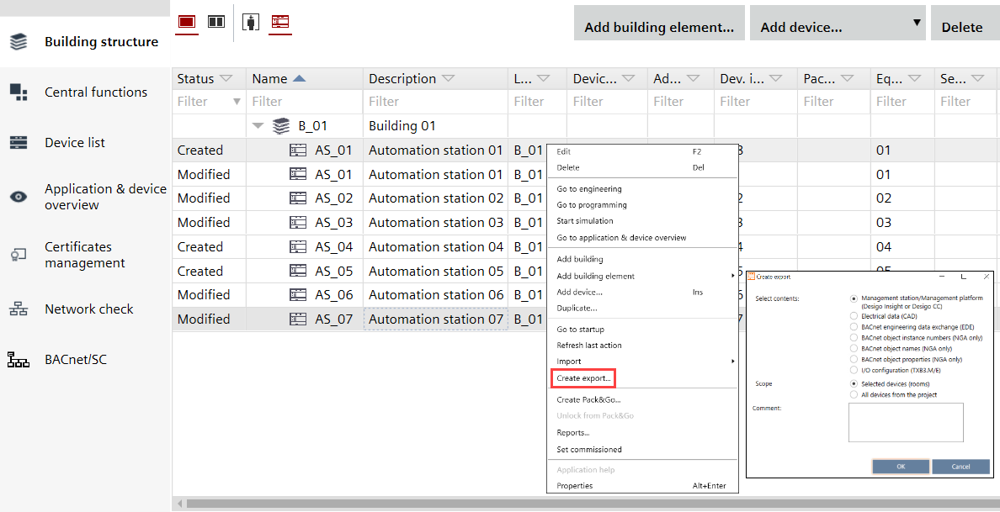

Creating data exports
You can export project data for the following purposes:
- Management station/Management platform (Desigo Insight or Desigo CC)
Exports data which can be used in Desigo CC. - Electrical data (CAD)
Exports data containing information about the control panel (devices and corresponding data points). This can be used as a basis for designing and assembling the control panel. - BACnet engineering data exchange (EDE)
Exports Engineering Data Exchange (EDE) files (*.csv format) containing information on the BACnet objects. EDE files are used to exchange data between BACnet server and BACnet client. - BACnet object instance numbers (PXC4/5/7 only)
Exports the BACnet object instances or names into CSV file. It allows to change the BACnet object instances or names/descriptions in Excel and import the results again into ABT Site. BACnet object instance name.
Changing BACnet object instance numbers (CSV) - BACnet object names (PXC4/5/7 only)
This function allows all names for the same object to be unified and standardized.
Changing BACnet object names and descriptions (CSV) - BACnet object properties (PXC4/5/7 only)
This function allows to view all standard BACnet properties in the form of a CSV file. Exports an object properties list of the selected devices into a CSV file. This export serves as documentation of the object settings at handover to the customer.
Changing BACnet object properties (CSV) - I/O Configuration (TXB3.M/E)
Exports the I/O configuration of a bus interface module. You can make manual changes to the exported file and reimport it.
Importing modules and I/Os (for TXB3.M only)

Also you can choose to include all devices of the project or the devices you selected.
- Selected devices (rooms)
Includes only the selected devices. - All devices from the project
Includes all devices contained in the project.

If there is a data point link from device A to device B, both devices need to be included in the export file. Otherwise the data point link is not exported.
Create a data export
- Go to Building > Building structure
- Select a device or a hierarchy object.
- Right-click and select Create export.
- The Create export dialog box opens.
- Select the type of content to export:
Select contents - Management station/Management platform (Desigo Insight or Desigo CC)
- Electrical data (CAD)
- BACnet engineering data exchange (EDE)
Note: Verify if the Object structure on BACnet is set correctly. KBOB does not allow additional hierarchies (structured view object).
See Device details
See BACnet object instances. - BACnet object instance numbers (PXC4/5/7 only)
See BACnet object names. - BACnet object names (PXC4/5/7 only)
- BACnet object properties (PXC4/5/7 only)
- I/O configuration (TXB3.M/E)
Scope - Selected devices (rooms)
- All devices from the project
- (Optional) Enter a comment.
- Click OK.
- The selected content is exported to the default directory for exports.
- A dialog box displays allowing you to open the containing folder.
You can define the default export path in Project Manager > Settings > Export path.
Settings